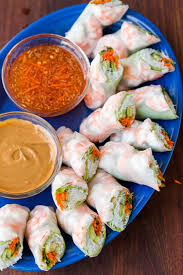

Fresh Spring Rolls

Plate of Fresh Spring Rolls
Making fresh spring rolls is one of my favorite dishes to make. They're quick and easy to make with the added benefit of being relatively healthy to eat.The hardest thing about this dish is probably making the dipping sauce but I usually just buy it from my local Asian grocery store.
Ingredients
- 2 ounces rice vermecelli
- 8 rice wrappers
- 8 large cooked shrimp - peeled, devined and cut in half
- 1 1/3 tablespoons chopped fresh Thai basil
- 3 tablespoons chopped fresh cilantro
- 2 leaves lettuce, chopped
- 4 teaspoons fish sauce
- 1/4 cup water
- 2 tablespoons fresh lime juice
- 1 clove garlic, minced
- 2 tablespoons white sugar
- 1/2 teaspoon garlic chili sauce
- 3 tablespoons hoison sauce
- 1 teaspoon finely chopped peanuts
Directions
- Bring a medium saucepan of water to boil. Boil rice vermecelli 3 to 5 minutes, or until al dente, and drain.
- Fill a large bowl with warm water. Dip noe wrapper into the hot water for 1 second to soften. Lay wrapper flat. In a row across the center, place 2 shrimp halves, a handful of vermecelli, basil, mint, cilantro and lettuce, leaving about 2 inches uncovered on each side. Fold uncovered sides inward, then tightly roll the wrapper, beginning at the end with the lettuce. Repea wih remaining ingredients.
- In a small bowl, mix the fish sauce, water, lime juice, garlic, sugar and chili sauce.
- In another small bowl, mix the hoisin sauce and peanuts.
- Serve rolled spring rolls with the fish sauce and hoisin sauce mixtures.